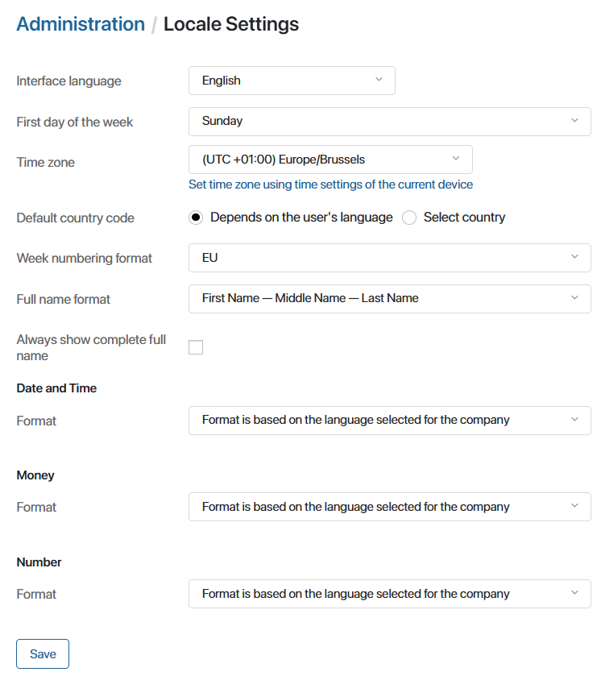

On the Locale Settings page, the administrator can set the following user interface parameters:
- Interface language.
- First day of the week.
- Time zone.
- Default country code.
- Week numbering format.
- Full name format.
- Date and time format.
- Money and number format.

Interface language
You can change the language of the system interface. Depending on the edition used, the following languages are supported by default:
- English for SaaS.
- English, Spanish, and German for On-Premises.
Please note that the user can set personalized interface language settings that differ from the company’s settings.
If your company needs to translate the interface into a language that is not available in the default settings, install an additional locale.
It is also possible to translate a custom configuration to an available interface language, even after installing a new locale.
If you want to change the translations for the languages available by default, follow the same steps as for installing a new locale.
начало внимание
All functions of the Administration workspace are available only in the original interface language that was used when the company was created. To work in this workspace, the administrator only needs to change the language to the original language in their profile.
конец внимание
First day of the week
You can select the day on which the week starts in the calendar: Monday or Sunday. This default setting applies to all calendars, including apps of the Event type.
Time zone
By default, the time zone of the system coincides with the time zone that is set on the local computer of the user who created the company. In this workspace, you can change the time zone settings if necessary. To quickly select the time zone from your local computer, click Set time zone using time settings of the current device.
The time zone is used to start business processes and determine the due date of tasks.
Please note that the user can set a personalized time zone setting that differs from the company time zone setting.
Default country code
Configure the country code that will be displayed by default in the Phone number type field:
- Depends on the user’s language. The code corresponds to the personalized interface language settings.
- Select country. The code of one country will be displayed for any user. Select it in the field that appears below.
Week numbering format
You can choose from which week the year will start in the calendar:
- EU. From the first full week of January.
- USA. From the week on which January 1 falls, regardless of the day of the week.
Full name format
You can choose how your BRIX username will be displayed. The following options are available: First Name - Middle Name - Last Name or Last Name - First Name - Middle Name. For example, Peter John White or White Peter John. Specify the format that is accepted in your organization and click Save.
Show complete full names
Check the Always show complete full name option to display the first, middle, and last names of employees when searching in the Users type field. This will help to distinguish employees with the same initials.
Date and time
The date and time display can be set as follows:
- Use the format that corresponds to the standard of the installed interface language.
- Select one of the available design options for the date and specify the hour time format.
- Manually specify the date and time format in any combination.
Money
To customize the display of monetary units, you can:
- Use a format based on the company language.
- Select a preconfigured option to place the separator in thousandths and fractions.
Number
The format of numbers is customized in the same way as the money format.
To apply changes to the settings, click the Save button at the bottom of the page. Preset date, time, money, and number formats that do not match the company language are also saved when adding a custom locale.